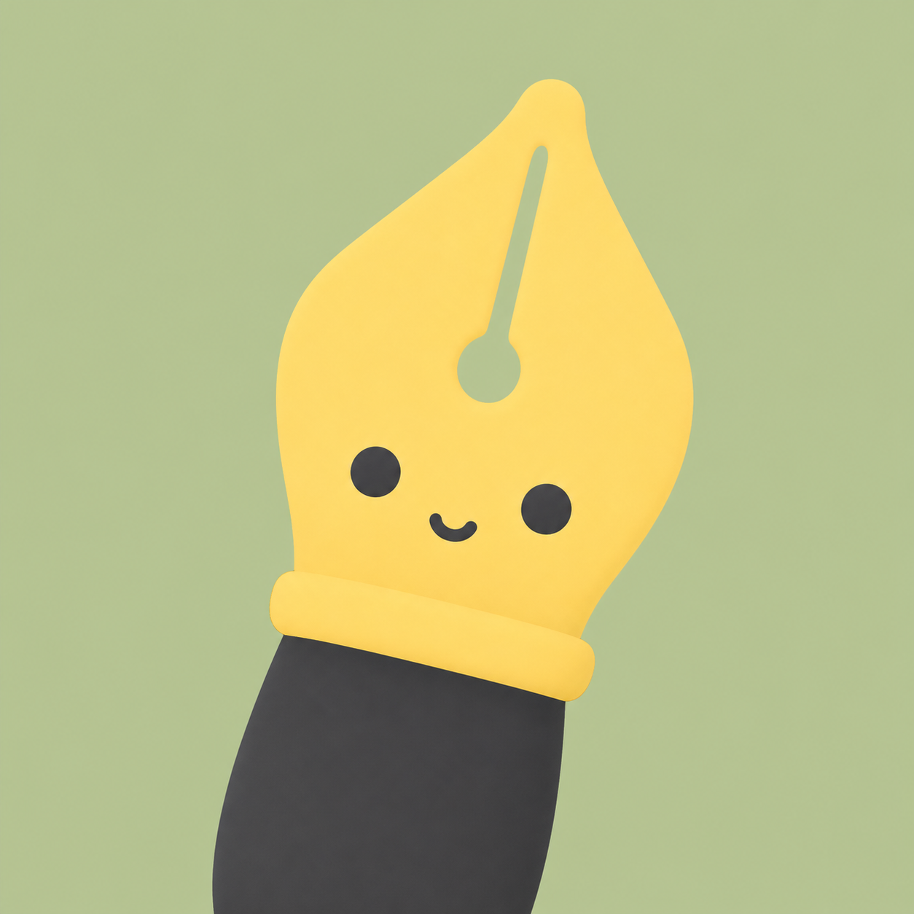

Command palette
Press ⌘ ⇧ P. Do anything.
Type a few letters and run any command: split a tile, switch theme, move a note, toggle read mode. One list, one rhythm, thousands of keystrokes saved.
Introducing Velocity
The notes app for people who live on the keyboard. A command for everything, a workspace that tiles itself, and an interface that never waits on a network.
Self-hosted. Your notes live on your own disk.
Every action in Velocity is a command, and every command has a shortcut. Reach for the mouse when you want to, never because you have to.
Type a few letters and run any command: split a tile, switch theme, move a note, toggle read mode. One list, one rhythm, thousands of keystrokes saved.
⌘ P searches every word of every note, with matches highlighted. ⌘ ↩ opens the result in a new tile.
The cheat sheet, tooltips and palette all read from one registry, so they can never disagree.
Browsers keep ⌘N ⌘W ⌘T ⌘1–9 for themselves. Every one of them has a Ctrl Alt twin that always works, on any keyboard layout. AltGr is ignored, so typing @ { € never fires a command.
This page listens. Hit a Velocity shortcut on your real keyboard, or tap one below.
Waiting for a shortcut…
Press Ctrl Alt \
Every light on the keyboard below is a real key. Modifiers glow while held.
Combos your browser reserves are never intercepted, and the page only listens while this section is on screen.
Split the editor into tiles and keep several notes in view. Pick the tiling that fits your head: classic dwindle splits, or a scrolling strip of columns.
Automatic, along the longer side. Zero fiddling, zero dragging, and the layout comes back after a reload.
Inspired by niri and PaperWM. Columns sit on a horizontal strip that scrolls to keep your focus in view, so a tile is never squeezed to make room for another.
⌃⌥ ←↑↓→ or H J K L
Add ⇧ to carry a note to the neighbouring tile.
⌃⌥↩ monocle any tile. Again to return.
Drop a note on a tile edge to split there, or in the centre to replace.
Editors stay mounted: cursor, scroll and undo history survive every move.
Tabs and tiles come back exactly as you left them.
One place to think in words, in diagrams, and in folders, with nothing between you and the page.
Markdown renders as you type, and the keys you already know just work.
A full Excalidraw canvas attached to any note, open it as a tile right beside your words.
Flat, forgiving folders and a library that tidies up after you.
Apple, Catppuccin, Gruvbox, Everforest, Nord and Solarized, each in light and dark, with flavours and contrast levels of their own. Even the editor’s syntax colours follow along. Go on, click.
Our focus is reliability and delight.
export const target = { latencyMs: 50, mode: 'instant' } // never waitsCatppuccin brings Latte, Frappé, Macchiato and Mocha. Gruvbox and Everforest bring Hard, Medium and Soft.
Follow the system or pick a side. Eight macOS accent colours or the theme’s own.
One command per flavour: type “Theme: Catppuccin Mocha” and press ↩.
Velocity is local-first. Your typing lands in memory instantly, and a patient background worker carries it to your disk. If the network drops, you will not notice. If the tab closes, nothing is lost.
.md files, with images beside them, following renames and deletes.A handful of principles, held without compromise.
50 ms
Typing, tiling, switching, searching. Interactions resolve before you can notice them, because nothing waits on a round trip.
Your device is the source of truth during every moment you work. The server stores. The interface thinks.
A single database file you can back up, move and own, mirrored to plain Markdown you can read in anything.
The index is warmed at startup and never rebuilt cold, so results arrive in under ten milliseconds.
Shortcuts, the palette, tooltips and the cheat sheet all read one registry. Add a command once and it exists everywhere.
Tiles are positioned, not rebuilt. Split, swap, zoom and rotate while every editor keeps its cursor, scroll position and undo history.
Semantic colour, vibrancy, quiet motion and generous targets. It feels native because it follows the same rules.
Built on React, CodeMirror 6, Zustand, FlexSearch, Hono and SQLite.

Think faster. Stay on the keys. Keep every word on your own disk.
git clone … && make upRuns anywhere Docker runs.